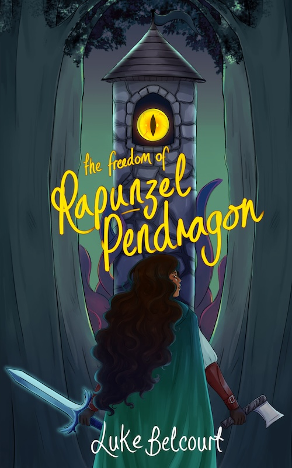

rapunzel
|  |
|
After twelve years stuck in a tower by her belligerent father, Princess Rapunzel braids a rope out of her own hair and escapes to freedom. The dutiful young Sir Galahad, who spent most of his childhood helping raise Rapunzel, can't tell his adopted father he's gay. Exiled from Camelot but beloved by the public, King Arthur has to gather a group of remarkable fairytale characters in order to fight the Boogeyman. But with so many bridges burned, he may have to listen to the people he's hurt along the way. The Freedom of Rapunzel Pendragon is an adventure fantasy about toxic masculinity, LGBT adult coming of age, and balancing what your family want for you with what you want for yourself.
|